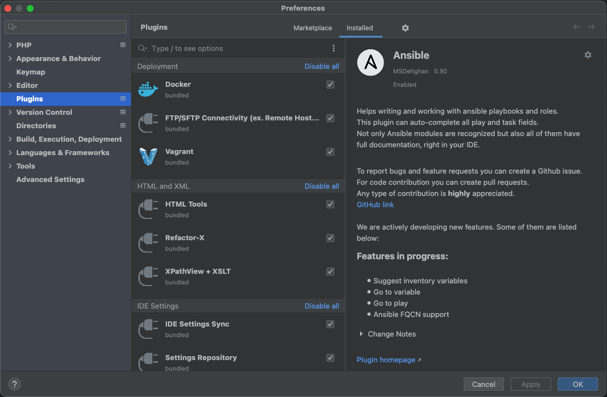

NEON (Nette Object Notation; Neon format) is a custom configuration language similar to YAML.
Installation of IntelliJ NEON Nette Support is done through IntelliJ IDEA's integrated plugin manager. From within the application, open Preferences and select Plugins from the list on the left-hand side. This will show you the list of currently installed plugins.
Next, click the Marketplace tab, which allows you to browse through the plugins available on JetBrains' Marketplace. Enter "NEON" into the search field in the top left corner and select NEON Nette Support from the list. Finally, click the green Install button and restart the application. The plugin should now be installed, and you can set up your project.
20: test"20": testservices:
- factory: Foo\Bar
setup:
key: [foo: 123, bar: 456]services:
- factory: Foo\Bar
setup:
key:
foo: 123
bar: 456Since 1.0.0, IntelliJ NEON Nette Support plugin is compatible with all major JetBrains IDEs with version 2021.1.1 and higher.
Bug reports can be realized in GitHub public repository.
© 2022 Matouš Němec